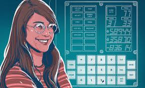

Computer pioneer Margaret Hamilton was critical to landing astronauts on the moon for the first time on 20 July 1969 and returning them safely a few days later. The young Massachusetts Institute of Technology (MIT) computer programmer and working mother led the team that created the onboard flight software for the Apollo missions, including Apollo 11. The computer system was the most sophisticated of its day. Her rigorous approach was so successful that no software bugs were ever known to have occurred during any crewed Apollo missions. “She symbolises that generation of unsung women who helped send humankind into space,” said President Barack Obama in 2016 when he awarded Hamilton the Presidential Medal of Freedom, the United States’ highest civilian award. In 2017, she was one of a handful of Nasa women to be immortalised as a Lego figurine.On the 50th anniversary of the first moon landing, Hamilton, 82, looks back on her trailblazing work in computing.
Question's Asked During Interview To Margaret Hamilton
What got you into software engineering? There were no computer science degrees when you were starting out…?
I got married in 1958, just after I graduated in math with a minor in philosophy from Earlham College [in Indiana]. We both had assistantships to attend graduate school – me in abstract math and my husband in chemistry – but in the meantime I had taught high school for a year, we had my daughter, and my husband decided he wanted to go to law school at Harvard. I found a job to support our family at the nearby Massachusetts Institute of Technology (MIT). It was in the laboratory of Prof Edward Lorenz, the father of chaos theory, working on a system to predict weather. He was asking for math majors. To take care of our daughter, we hired a babysitter. Here I learned what a computer was and how to write software. Computer science and software engineering were not yet disciplines; instead, programmers learned on the job. Lorenz’s love for software experimentation was contagious, and I caught the bug.
How did you end up joining the Apollo project in 1964?
I had moved to writing software for detecting enemy aircraft at MIT’s Lincoln Laboratory. I was planning to resume graduate school when my husband saw a newspaper advert. The MIT Instrumentation Laboratory was looking for people to develop software to “send man to the moon”. The lab had received the Nasa contract to build the onboard flight software for the Apollo project, having already been selected to design the computer hardware. I was attracted both by the sheer idea and the fact that it had never been done before. I was the first programmer to join and the first woman they hired. Male engineers were already working on the project, but they were hardware engineers and it wasn’t their thing. I had it as my background. I think [the lab] just figured that I could handle the unknown.